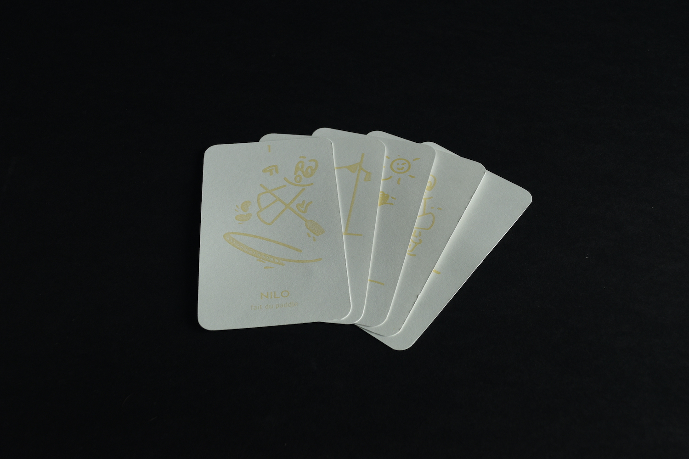
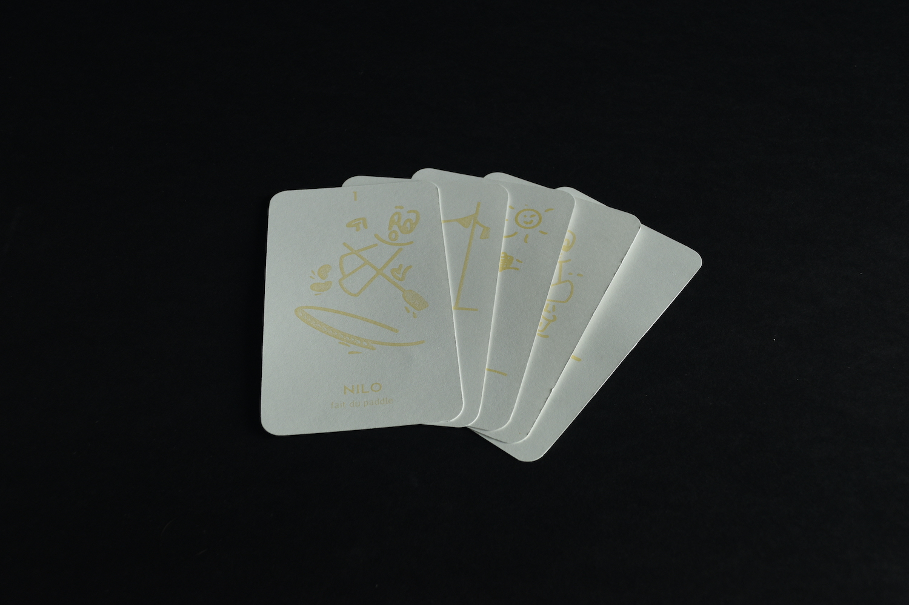
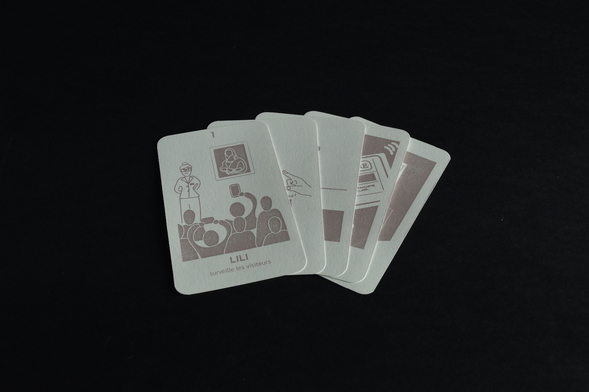
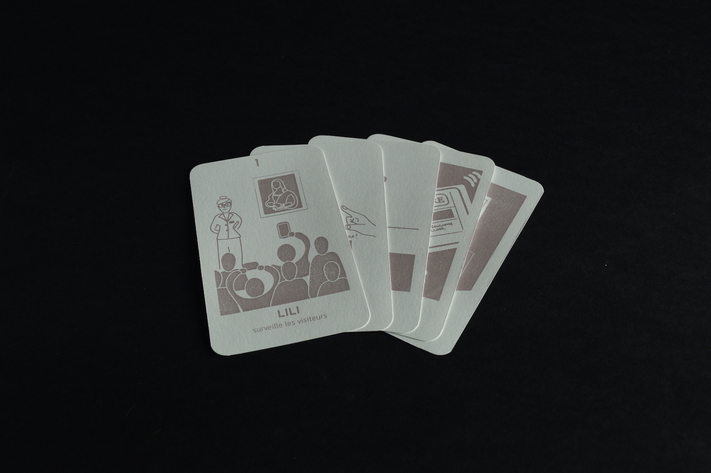

Jeu des six vacances
Jeu de cartes en sérigraphie
S’initier à la peinture faite à partir de produits naturels. Encourager une production responsable grâce à l’impression naturelle et le support recyclé à travers un projet de groupe.
Ce jeu est un hommage aux grandes vacances et à son iconique jeu des 7 familles. Ici, la famille est remplacée par un personnage reflétant les vacances de chaque membre du groupe.
Nana me représente : flâne à la brocante, prend des photos, fait du vélo, boit un soda, contemple le coucher du soleil.
 

 
